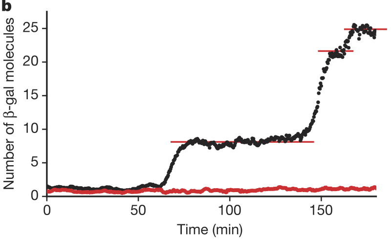
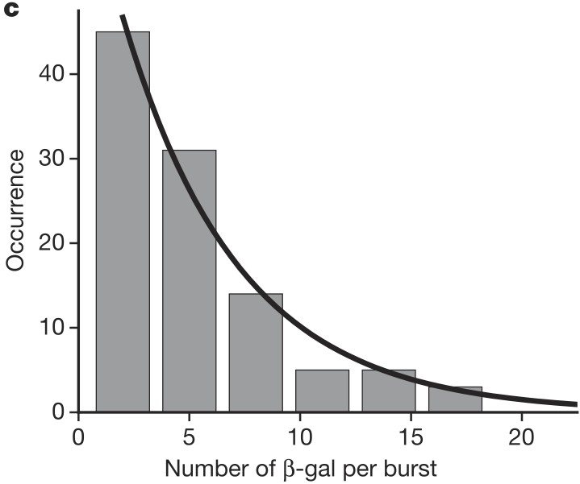

17 Bursty gene expression
Design principle
- Bursty gene expression enables cells to regulate the mean and cell-cell variability of protein levels by controlling burst frequency and burst size.
Concepts
- Master equations as gain-loss equations for probability.
- Master equations can equivalently be defined in terms of a set of moves and associated propensities and updates.
- Sampling out of probability distributions is a useful way to computationally determine their properties.
- The Gillespie algorithm enables sampling out of probability distributions described by master equations.
- Gene expression occurs in bursts.
Techniques
- Manipulating master equations
- Probability stories (Poisson, Geometric, and Negative Binomial)
- Gillespie algorithm, a.k.a. stochastic simulation algorithm
In the last lesson, we laid out two objectives. First, we aimed to identify the sources of noise and how to characterize them. We summarized statistics about the probability distribution of copy numbers by considering the mean and coefficient of variation. The mean ends up following the same deterministic dynamics we have been considering thus far in the course. The coefficient of variation is a measure of noise, or relative departure from the mean behavior. Now, we will look at the dynamics of the entire probability distribution of copy number, \(P(n;t)\), the probability of having \(n\) molecules at time \(t\).
The formalism we develop will enable us to assess temporal dynamics of expressions of individual genes in individual cells and reason quantitatively about the experimental observation that gene expression occurs in bursts, where many copies of gene product are made followed by periods of quiescence.
17.1 Master equations
We will use master equations to describe the dynamics of \(P(n;t)\). Generally, a master equation is a loss-gain equation for probabilities of states governed by a Markov process. (To see where it gets its name, you can read this amusing blog post by Nicole Yunger Halpern.) In our case, the “state” is the set of copy numbers of molecular species of interest. The values of \(n\) are discrete, so we have a separate differential equation for each \(P(n;t)\). Specifically,
\[ \begin{align} \frac{\mathrm{d}P(n;t)}{\mathrm{d}t} = \sum_{n'}\left[W(n\mid n') P(n';t) - W(n'\mid n)P(n;t)\right]. \end{align} \tag{17.1}\]
Here, \(W(n\mid n')\) is the transition probability per unit time of going from \(n'\) to \(n\).
The master equation makes sense by inspection and appears simple. The nuance lies in the definition of the transition rates, \(W(n\mid n')\). There is also the computational difficulty that \(n\) can be very large. In general, solving the master equation is difficult and is usually intractable analytically and often also numerically. Therefore, we sample out of the distribution \(P(n;t)\) that is defined by the master equation. That is, we can draw many samples of values of \(n\) at time points \(t\) that are distributed according to the probability distribution that solves the master equation. We can then plot histograms or ECDFs to get an approximate plot of the probability distribution. We can also use the samples to compute moments, giving us estimates of the mean and variance. Generating the samples from the differential master equation is done using a Gillespie algorithm, also known as a stochastic simulation algorithm, or SSA, which we will in Technical Appendix 16a.
Note that in using a master equation we are assuming that events that change state (that is, that change the copy number of one or more species) are Poisson processes. In this context, a Poisson process may be thought of as a series of well-defined, separate events that occur randomly, without memory of what has occurred before. (In the context of Poisson processes, these events are called “arrivals.”) This is often the case for things like molecular collisions. Implicit in the assumption that state changes are modeled as Poisson processes is that the binding or dissociation (or any other event) happens essentially instantaneously with pauses between them. This is yet another instance of where a separation of time scales is important.
17.2 The Master equation for unregulated gene expression
As we have seen, unregulated gene expression is described by the macroscale equation
\[ \begin{align} \frac{\mathrm{d}x}{\mathrm{d}t} = \beta - \gamma x, \end{align} \tag{17.2}\]
where \(x\) is the concentration of the species of interest. Multiplying both sides of this ODE by the volume \(V\) of the cells (or whatever the system of interest is) gives
\[ \begin{align} \frac{\mathrm{d}n}{\mathrm{d}t} = \beta V - \gamma n, \end{align} \tag{17.3}\]
where \(n\) is the number of copies of the species of interest. For the rest of this chapter, we will redefine \(\beta \leftarrow \beta V\) for notational convenience, knowing that we can convert back as desired. So, we have
\[ \begin{align} \frac{\mathrm{d}n}{\mathrm{d}t} = \beta - \gamma n. \end{align} \tag{17.4}\]
To translate this into stochastic dynamics, we write the production rate as
\[ \begin{align} \text{production rate} = \beta \delta_{n',n-1}, \end{align} \tag{17.5}\]
where we have used the Kronecker delta,
\[ \begin{align} \delta_{ij} = \left\{\begin{array}{lll} 1 && i = j \\ 0 && i\ne j. \end{array} \right. \end{align} \tag{17.6}\]
This says that if our current copy number is \(n-1\), the probability that it moves to \(n\) in unit time is \(\beta\). Similarly, the decay rate is
\[ \begin{align} \text{decay rate} = \gamma (n+1) \delta_{n',n+1}. \end{align} \tag{17.7}\]
This says that if we have \(n+1\) molecules, the probability that the copy number moves to \(n\) in unit time is \(\gamma(n+1)\). Thus, we have
\[ \begin{align} W(n\mid n') = \beta \delta_{n',n-1} + \gamma (n+1)\delta_{n',n+1}. \end{align} \tag{17.8}\]
We can then write our master equation as
\[ \begin{align} \frac{\mathrm{d}P(n;t)}{\mathrm{d}t} = \beta P(n-1;t) + \gamma(n+1)P(n+1;t) - \beta P(n;t) - \gamma n P(n;t), \end{align} \tag{17.9}\]
where we define \(P(n<0;t) = 0\). This is actually a large set of ODEs, one for each \(n\).
Solving for \(P(n;t)\) is nontrivial and often impossible. Instead, let’s look for a steady state solution of this system of ODEs; i.e., let’s find \(P(n)\) that satisfies
\[ \begin{align} \frac{\mathrm{d}P}{\mathrm{d}t} = 0. \end{align} \tag{17.10}\]
To solve this, we will start with the case where \(n=0\), noting that \(P(n<0) = 0\).
\[ \begin{align} \gamma P(1) - \beta P(0) = 0 \; \Rightarrow \; P(1) = \frac{\beta}{\gamma}P(0). \end{align} \tag{17.11}\]
For the case where \(n=1\), we have
\[ \begin{align} \beta P(0) + 2 \gamma P(2) - \beta P(1) - \gamma P(1) = 0 \;\;\Rightarrow\;\; P(2) = \frac{1}{2\gamma}\left(\beta P(1) + \gamma P(1) - \beta P(0)\right). \end{align} \tag{17.12}\]
We can use the fact that \(P(1) = \beta P(0) / \gamma\) to simplify this expression to
\[ \begin{align} P(2) = \frac{1}{2}\left(\frac{\beta}{\gamma}\right)^2\,P(0). \end{align} \tag{17.13}\]
We do it again for \(n = 2\).
\[ \begin{align} \beta P(1) + 3 \gamma P(3) - \beta P(2) - 2\gamma P(2) = 0 \;\;\Rightarrow\;\; P(3) = \frac{1}{3\gamma}\left(\beta P(2) + 2\gamma P(2) - \beta P(1)\right). \end{align} \tag{17.14}\]
Using our expressions for \(P(1)\) and \(P(2)\), we can rearrange this expression to write \(P(3)\) in terms of \(P(0)\), giving
\[ \begin{align} P(3) = \frac{1}{6}\left(\frac{\beta}{\gamma}\right)^3\,P(0). \end{align} \tag{17.15}\]
We recognize a pattern such that for any \(n\), we have
\[ \begin{align} P(n) = \frac{1}{n!}\left(\frac{\beta}{\gamma}\right)^n P(0). \end{align} \tag{17.16}\]
We can verify that this indeed solves for the steady state by substitution into the master equation with \(\mathrm{d}P(n;t)/\mathrm{d}t = 0\). To complete the solution we need to find \(P(0)\). We can use the fact that the probability distribution must be normalized;
\[ \begin{align} \sum_{n=0}^\infty P(n) = P(0) \sum_{n=0}^\infty \frac{1}{n!}\left(\frac{\beta}{\gamma}\right)^n = P(0)\mathrm{e}^{\beta/\gamma} = 1, \end{align} \tag{17.17}\]
where we have noted that the sum is the Taylor series expansion of the exponential function. Thus, we have \(P(0) = \mathrm{e}^{-\beta/\gamma}\), and we have our steady state probability mass function,
\[ \begin{align} P(n) = \frac{1}{n!}\left(\frac{\beta}{\gamma}\right)^n \mathrm{e}^{-\beta/\gamma}. \end{align} \tag{17.18}\]
We recognize this as the probability mass function of the Poisson distribution. We could perhaps have guessed this from the “story” of the Poisson distribution.
The probability that \(k\) Poisson processes arrive in unit time is Poisson distributed.
The story of mRNA production matches this story. The “arrival” here is the production of a gene product. We need these events to happen before decay. Apparently, the rate \(\lambda\) is in this case \(\beta/\gamma\).
It is useful also to consider the moments of the Poisson distribution and compute useful summary statistics of the distribution.
\[ \begin{align} &\text{mean} = \langle n \rangle = \frac{\beta}{\gamma}, \\[1em] &\text{variance} = \sigma^2 = \langle n^2 \rangle - \langle n \rangle^2 = \frac{\beta}{\gamma}, \\[1em] &\text{noise} = \text{coefficient of variation} = \eta = \frac{\sigma}{\langle n \rangle} = \sqrt{\frac{\gamma}{\beta}}, \\[1em] &\text{Fano factor} = F = \frac{\sigma^2}{\langle n \rangle} = 1. \end{align} \tag{17.19}\]
The Fano factor is a parameter you may not be familiar with. It is the ratio of the variance to mean, and is widely used as a measure of “Poisson-ness” of a distribution. Poisson distributions have a Fano factor of one, indicating a light tail to the distribution, while heavier-tailed distributions have larger Fano factors.
17.3 Dynamics of the moments
From the master equation, we can derive an ODE describing the dynamics of the mean copy number of time, \(\langle n(t) \rangle\). To do this, we multiply both sides of the master equations by \(n\) and then sum over \(n\).
\[ \begin{align} &\sum_{n=0}^\infty n \left[ \frac{\mathrm{d}P(n;t)}{\mathrm{d}t} = \beta P(n-1;t) + \gamma(n+1)P(n+1;t) - \beta P(n;t) - \gamma n P(n;t)\right] \nonumber \\[1em] &= \frac{d\langle n \rangle}{\mathrm{d}t} = \beta \sum_{n=0}^\infty n P(n-1;t) + \gamma \sum_{n=0}^\infty n(n+1)P(n+1;t) - \beta\langle n \rangle - \gamma \langle n^2 \rangle, \end{align} \tag{17.20}\]
where we have used the facts that
\[ \begin{align} \langle n \rangle &= \sum_{n=0}^\infty n P(n;t), \\[1em] \langle n^2 \rangle &= \sum_{n=0}^\infty n^2 P(n;t). \end{align} \tag{17.21}\]
We have two sums left to evaluate.
\[ \begin{align} \sum_{n=0}^\infty n P(n-1;t) = \sum_{n=0}^\infty (n+1)P(n;t) = \langle n \rangle + 1, \end{align} \tag{17.22}\]
and
\[ \begin{align} \sum_{n=0}^\infty n(n+1)P(n+1;t) = \sum_{n=0}^\infty n(n-1)P(n;t) = \langle n^2 \rangle - \langle n\rangle. \end{align} \tag{17.23}\]
Thus, we have
\[ \begin{align} \frac{d\langle n \rangle}{\mathrm{d}t} &= \beta(\langle n \rangle + 1) + \gamma (\langle n^2 \rangle - \langle n\rangle) - \beta\langle n \rangle - \gamma \langle n^2 \rangle \nonumber \\[1em] &= \beta - \gamma \langle n \rangle, \end{align} \tag{17.24}\]
which is precisely the macroscale ODE we are used to. It is now clear that it describes the mean of the full probability distribution. The assumptions behind our ODE models are now also clear. They describe the dynamics of the expectation value of copy number (or concentration when divided by the total volume) whose probability distribution is described by a master equation.
17.4 Sampling out of master equations
We have managed to derive the steady state solution to a master equation, but we would like to know the full dynamics. In nearly all cases we may come across in modeling biological circuits, an exact analytical expression for \(P(n;t)\) is not accessible. We therefore turn to sampling out of \(P(n;t)\). This is achieved via a Gillespie algorithm, otherwise known as a stochastic simulation algorithm (SSA). A discussion and demonstration of this algorithm is in Technical Appendix 16a. This is a very widely used technique, and we will put it to use repeatedly in future chapters.
17.5 Experimental Fano factors are greater than one
Both or theoretical analysis and the Gillespie simulation (at least of the mRNA) showed us that the Fano factor for simple gene expression is one. So, if we see Fano factors of unity in experiment, we know our model for gene transcription is at least plausible.
Gene expression in individual cells typically results in a Fano factor greater than one! There are many ways this could come about, such as explicitly considering the multiple steps involved in making a protein, or by having a switchable promoter, as you can explore in an end-of-chapter problem in forthcoming chapters. Today, we will focus on a key experimental result: gene expression occurs in bursts.
17.6 Observations of bursty gene expression
In a beautiful set of experiments, Cai, Friedman, and Xie discovered that gene expression is bursty. (We will come to understand what we mean by “bursty” in a moment.)
Through a clever experimental setup (we encourage you to read the paper), Cai, Friedman, and Xie were able to get accurate counts of the number of β-galactosidase molecules in individual cells over time. They found that the number of molecules was constant over long stretches of time, and then the number suddenly increased. The figure below, taken from the paper, shows the number of β-galactosidase molecules present in a single cell over time (black) and a blank background (red). This shows that expression of the β-gal gene happens in bursts. In each burst, many molecules are made, and then there is a period between bursts where no molecules are made.

Cai and coworkers also found that the number of molecules produced per burst was geometrically distributed, as shown in the figure below.

Recall, the “story” behind the Geometric distribution.
We perform a series of Bernoulli trials with success probability \(p_0\) until we get a success. We have \(k\) failures before the success. The probability distribution for \(k\) is Geometric.
The probability mass function for the Geometric distribution is
\[ \begin{align} P(k;p_0) = (1-p_0)^k p_0. \end{align} \tag{17.25}\]
Considering this story, this implies that a burst is turned on, and then it turns off by a random process after some time.
17.7 Master equation for bursty gene expression
We also see from the experimental results tracking β-galactosidase copy number that the time scale of the bursty gene expression is much shorter than the typical decay time. So, per unit time, we can have many gene products made, not just a single gene product as we have considered thus far. So, we can re-write our transition probabilities per unit time as
\[ \begin{align} W(n\mid n') &= \beta' \xi_{n-n'} + \gamma (n+1) \delta_{n+1,n'}, \end{align} \tag{17.26}\]
where \(\xi_{j}\) is the probability of making \(j\) molecules in a burst and \(\beta'\) is the probability per unit time of initiating production of molecules. If \(\xi_{j} = 0\) for all \(j\ne 1\), then \(\beta' = \beta\), and we have the same equations as before. So, our model is only slightly changed; we just allow for more transitions in and out of state \(n\).
We just have to specify \(\xi_{j}\). We can reason that the number of molecules per burst is geometrically distributed by matching the story. We can imagine that once a burst starts,
We know that the number of molecules produced per burst is geometrically distributed, so
\[ \begin{align} \xi_j = p_0(1-p_0)^j. \end{align} \tag{17.27}\]
Now, our master equation is
\[ \begin{align} \frac{\mathrm{d}P(n;t)}{\mathrm{d}t} &= \beta'\sum_{n'=0}^{n-1}p_0(1-p_0)^{n-n'} P(n';t) + \gamma(n+1)P(n+1;t) \nonumber \\[1em] &\;\;\;\;- \beta'\sum_{n'=n+1}^\infty p_0(1-p_0)^{n'-n}P(n;t) - \gamma n P(n;t). \end{align} \tag{17.28}\]
We can simplify the second sum by noting that it can be written as a geometric series,
\[ \begin{align} \sum_{n'=n+1}^\infty p_0(1-p_0)^{n'-n} = p_0\sum_{j=1}^\infty (1-p_0)^j = p_0\left(\frac{1-p_0}{1-(1-p_0)}\right) = 1-p_0. \end{align} \tag{17.29}\]
Thus, we have,
\[ \begin{align} \frac{\mathrm{d}P(n;t)}{\mathrm{d}t} &= \beta'\sum_{n'=0}^{n-1}p_0(1-p_0)^{n-n'} P(n';t) + \gamma(n+1)P(n+1;t) \nonumber \\[1em] &\;\;\;\;- \beta'(1-p_0)P(n;t) - \gamma n P(n;t). \end{align} \tag{17.30}\]
As we might expect, an analytical solution for this master equation is difficult. We are left to simulate it using SSA.
17.8 The steady state distribution for bursty expression is Negative Binomial
We could derive the steady state distribution of copy numbers under the bursty master equation, but we will instead take a story matching approach to guess the solution. The story of the Negative Binomial distribution is as follows.
We perform a series of Bernoulli trials with a success rate \(p_0\) until we get \(r\) successes. The number of failures, \(n\), before we get \(r\) successes is Negative Binomially distributed.
Bursty gene expression can give mRNA count distributions that are Negative Binomially distributed. Here, the Bernoulli trial is that a “failure” is production of an mRNA molecule and a “success” is that a burst in gene expression stops. So, the parameter \(p_0\) is related to the length of a burst in expression (lower \(p_0\) means a longer burst). The parameter \(r\) is related to the frequency of the bursts. If multiple bursts are possible within the lifetime of mRNA, then \(r > 1\). Then, the number of “failures” is the number of mRNA transcripts that are made in the characteristic lifetime of mRNA.
The Negative Binomial distribution is equivalent to the sum of \(r\) Geometric distributions. So, the number of copies will be given by how many bursts we get before degradation. This suggests that \(r = \beta'/\gamma\). We can then write the Negative Binomial probability mass function as
\[ \begin{align} P(n;r,p_0) = \frac{(n+r-1)!}{n!(r-1)!} p_0^r(1-p_0)^n, \end{align} \tag{17.31}\]
where \(r = \beta'/\gamma\). You can plug this in to the master equation to verify that this is indeed a steady state.
We can put this in more convenient form. Instead of using \(p_0\) to parametrize the distribution, we can instead define the burst size \(b\) as the mean of the geometric distribution describing the number transcripts in a burst,
\[ \begin{align} b = \frac{1-p_0}{p_0}. \end{align} \tag{17.32}\]
Recall that \(r\) is the typical number of bursts before degradation (or dilution), so \(r\) is a burst frequency. So, for convenience, we write the steady state distribution as
\[ \begin{align} P(n;r,b) = \frac{(n+r-1)!}{n!(r-1)!}\,\frac{b^n}{(1+b)^{n+r}}. \end{align} \tag{17.33}\]
Strictly speaking, \(r\) can be non-integer, so
\[ \begin{align} P(n;r,b) = \frac{\Gamma(n+r)}{n!\Gamma(r)}\,\frac{b^n}{(1+b)^{n+r}}, \end{align} \tag{17.34}\]
where \(\Gamma(x)\) is the gamma function.
The Negative Binomial is interesting because it can be peaked for \(r > 1\), but has a maximum at \(n=0\) for \(r < 1\). So, for a low burst frequency, we get several cells with zero copies, but we can also get cells with many. This might have interesting implications on the response of a group of cells to a rise in lactose concentration and also drop in other food sources. If \(r < 1\), we then have a simple explanation for the “all-or-none” phenomenon of induction observed many decades ago in E. coli by Novick and Weiner. Cells are either fully induced or not at all; with \(r < 1\), many cells have no \(\beta\)-galactosidase at all.
The known summary statistics of the Negative Binomial distribution are also useful.
\[ \begin{align} \langle n \rangle &= rb \\[1em] \langle n^2 \rangle &= rb(1+b+rb) \\[1em] \sigma^2 &= rb(1+b) \\[1em] \text{Fano factor} = F &= 1+b \\[1em] \text{noise} = \eta &= \sqrt{\frac{1+b}{rb}}. \end{align} \tag{17.35}\]
So, we can tune the burst frequency and burst size to control variability. For example, we could keep \(\langle n \rangle\) constant by increasing the burst size \(b\) while decreasing the burst frequency \(r\) (big, intermittent bursts), which would result in increased noise. If, instead, we decreased the burst size while increasing the burst frequency (short, frequent bursts), we get reduced noise. This gives a design principle, bursty gene expression enables cells to regulate the mean and cell-to-cell variability of protein levels by controlling burst frequency and burst size.
17.9 Technical Appendices
- 16a. Stochastic (Gillespie) simulation
- 16b. Profiling code for speed and an application of the Gillespie algorithm